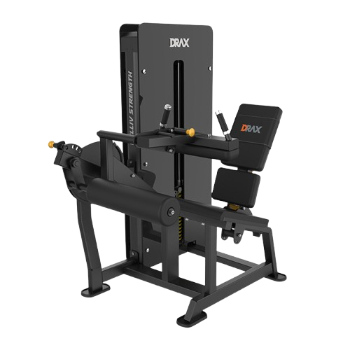

시티드레그컬
- 발판에 발을 올리며, 어깨너비보다 약간 넓게 발을 배치한다. 발바닥 전체가 발판에 닿도록 하여 안정적인 자세를 취한다.
- 엉덩이와 등을 고정한 채로 무릎 관절이 곧게 펴질 때까지 다리를 쭉 펴준다.
- 다리를 거의 완전히 펴기 직전에서 잠시 멈추고 이 위치에서 1~2초간 유지한다. 이때 대퇴사두근의 긴장을 느끼는 것이 중요하다.
- 이때 호흡은 뱉는다.
- 발판을 천천히 원래의 위치로 돌아간다. 이때 무릎을 구부리고 허리를 고정하여 등받이에 붙이도록 한다.
- 이때 호흡은 마신다.
주의사항
- 운동의 속도를 일정하게 유지한다. 너무 빠른 동작은 부상의 위험이 있다.
- 다리를 올릴때 반동을 주지 않는다.
- 무리하면 부상위험이 있기 때문제 처음에는 가벼운 중량부터 시작한다.
- 부상을 방지하기 위해 항상 준비 운동과 스트레칭을 한다.
운동부위 및 효과
- 햄스트링, 대둔근, 종아리근육
- 다리 근육의 균형을 맞출 수 있어 전반적인 하체 안정성을 높여준다.